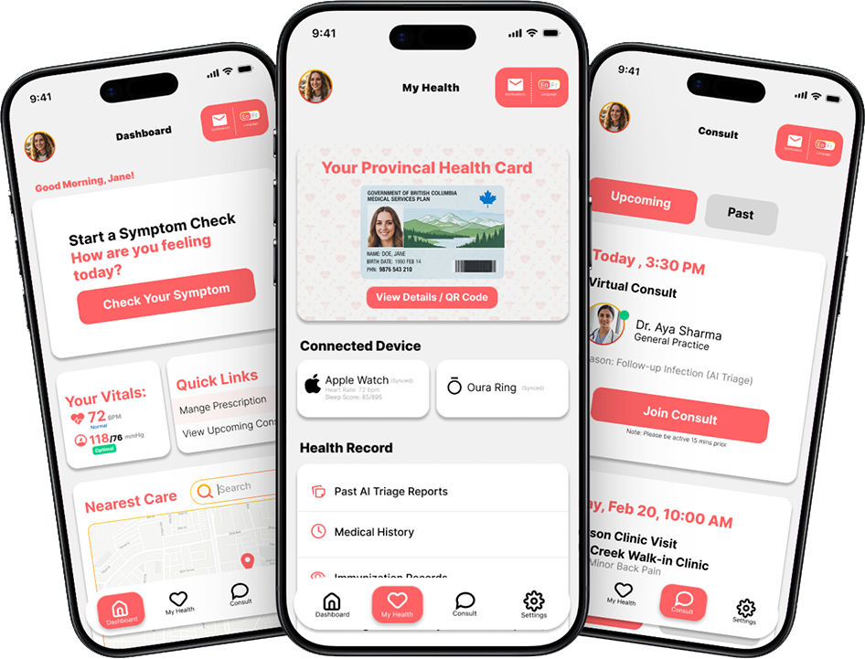
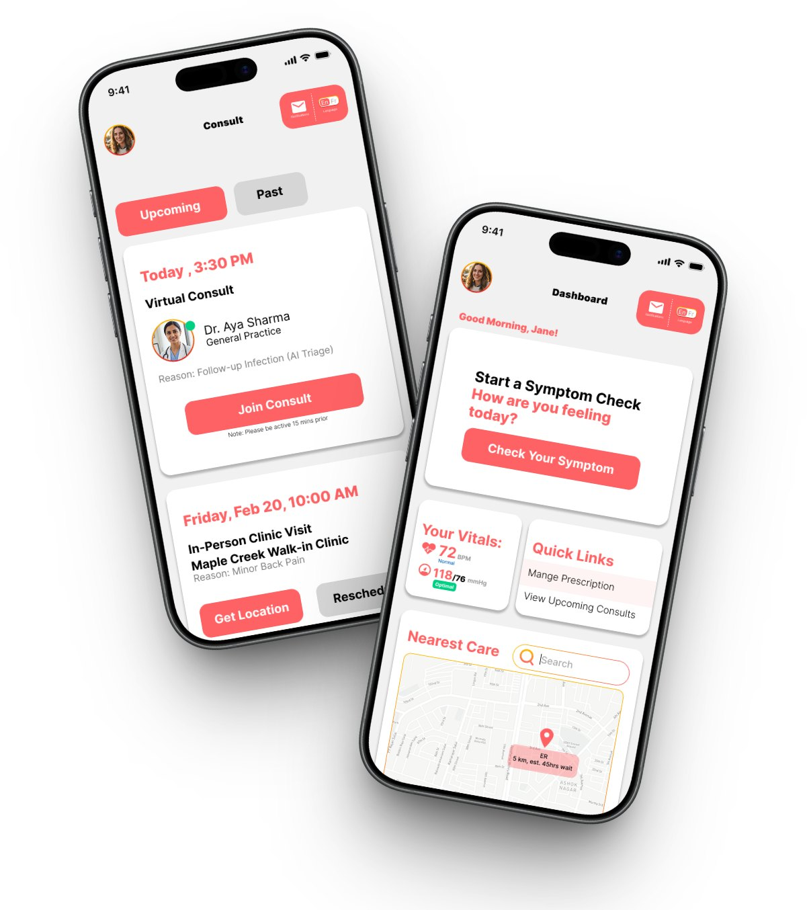
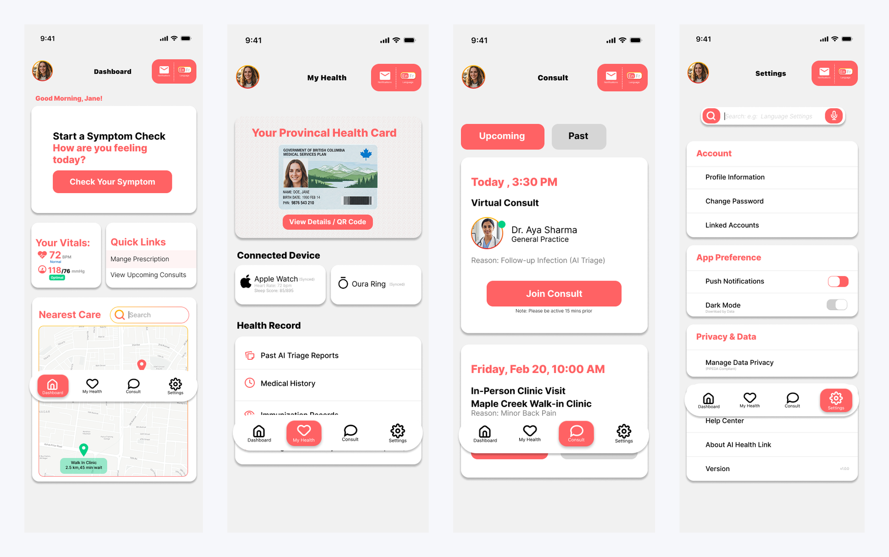
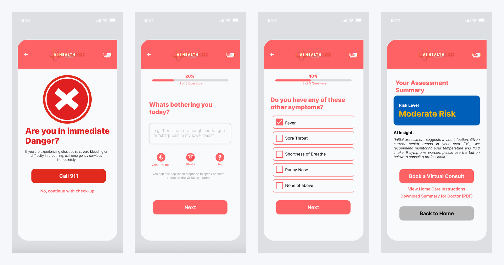
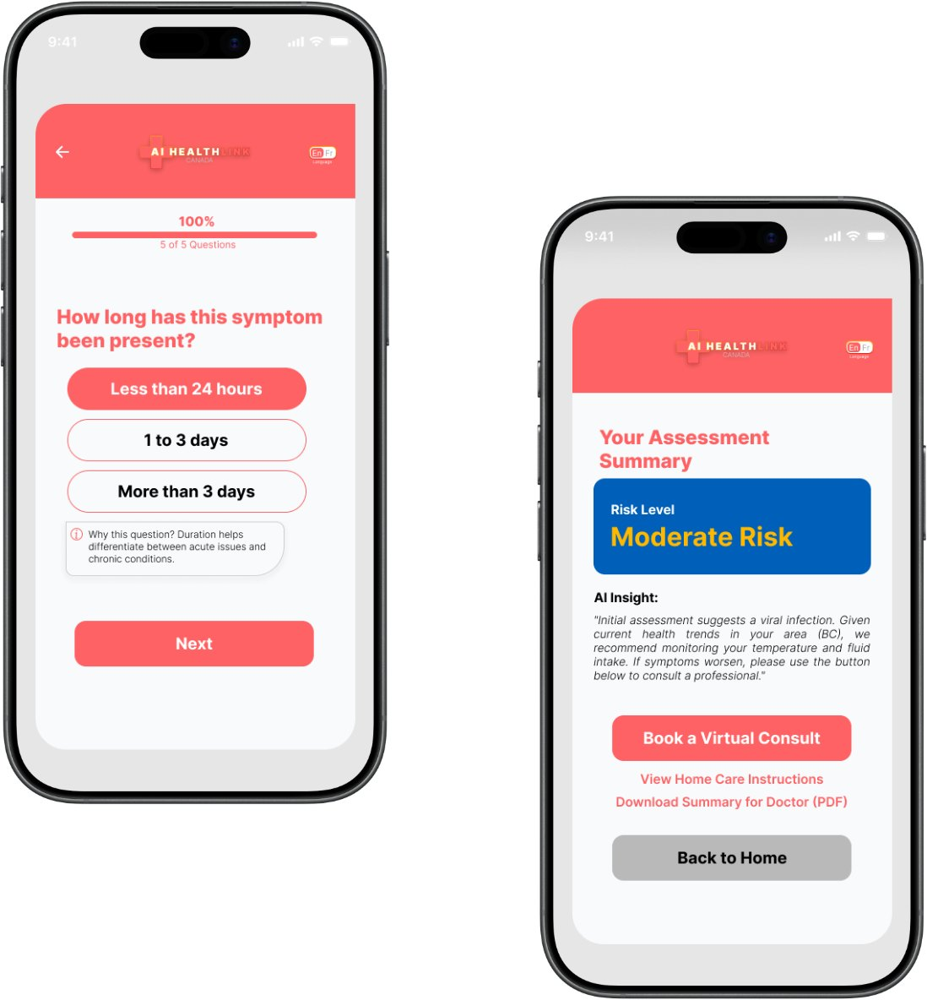
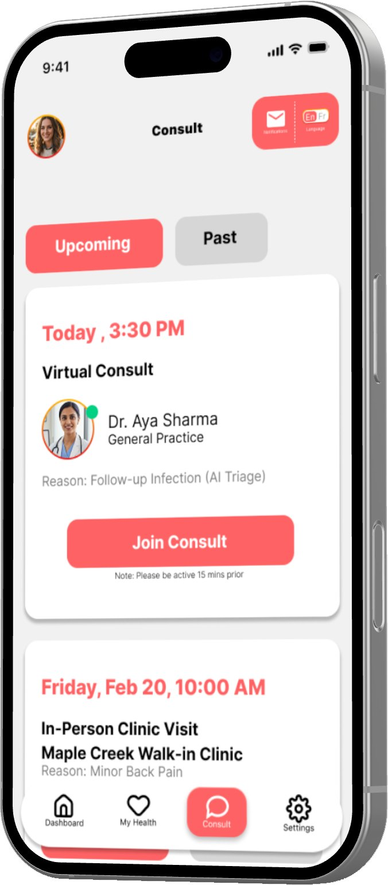
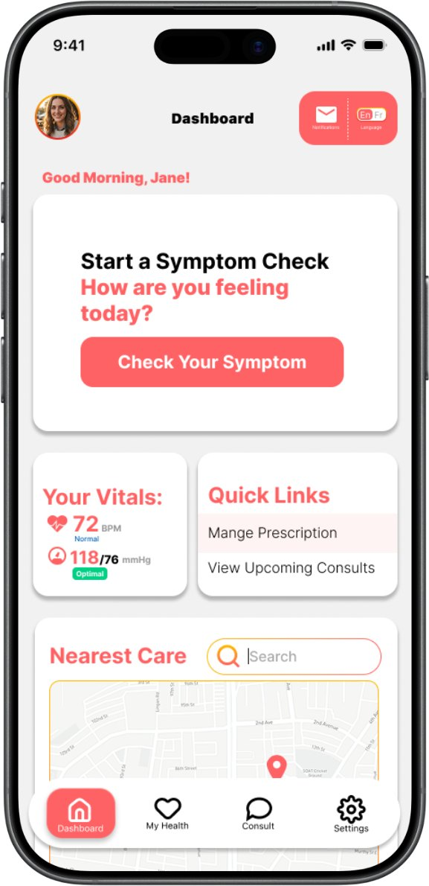
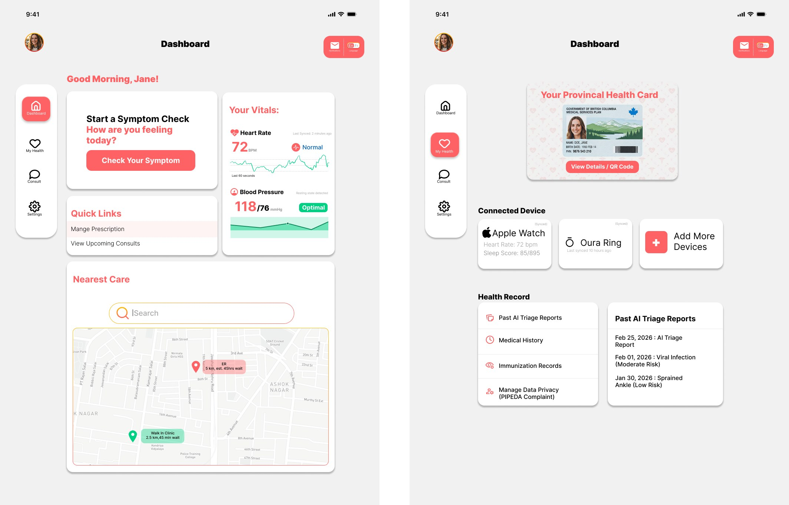
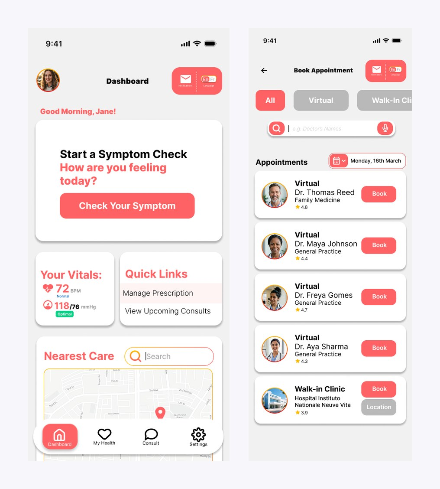
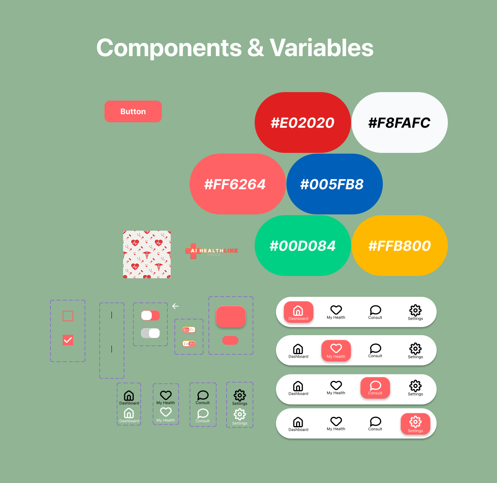

AI HealthLink is a concept app for Canadian healthcare: AI symptom triage, a digital health vault, and booking for virtual or walk-in care. I designed it end to end, on mobile and tablet, as a solo project.

This is a solo concept project. I designed it to work through a specific problem: how do you build a triage and intake flow that reduces cognitive load for anxious patients without stripping out the clinical detail that healthcare providers actually need?
To bridge the gap between complex medical logistics and patient-centric care by creating a unified digital health ecosystem.
Getting care in Canada usually means phone tag, a paper health card, and a waiting room. The idea here is to put the boring logistics in one place so the stressful part gets calmer: check a symptom with AI, keep your provincial health card and records in one vault, and book whichever kind of care the situation actually needs.
My role: everything. Research framing, flows, wireframes, the high-fidelity UI, the component sheet, the tablet study. On a personal project no decision is inherited, so every pattern here had to earn its place.

Health apps fail differently than other apps: the cost of a confusing screen isn't churn, it's a delayed diagnosis. I framed the project around three challenges before drawing anything:
The app relies on AI for symptom triage and possible diagnoses. The hard part is accuracy without a physical examination. A wrong suggestion could delay critical care and create real legal liability.
The platform must connect with hospital wait-time databases and wearable health devices. Real-time, accurate synchronization across fragmented healthcare infrastructure is a major technical constraint that shapes the UI.
People may open this app while they are scared or in pain, so the UX has to be simple and hard to get wrong. It also has to handle sensitive health data under PIPEDA the whole time.

Every decision in this section was shaped by the same constraint: the person using this interface may be sick, scared, or in physical discomfort. Comfortable users can tolerate ambiguity. Stressed users cannot.
The first screen of the triage flow doesn't ask about symptoms. It asks "Are you in immediate danger?" and puts a full-width Call 911 button under the question. AI triage is for the ambiguous middle, not emergencies, and the safest place to make that distinction is before the conversation starts. Only after the user opts to continue does the check-up begin.
The check-up runs five questions, each on its own screen with a progress bar ("2 of 5 Questions") so the commitment is always visible. Because users may be typing through pain or panic, the symptom description field accepts voice-to-text and photos of visible symptoms, not just typed input. Checkbox questions cover associated symptoms, health history, severity, and duration. Everything past the first question is a tap target rather than an essay.

The assessment ends with a risk level, a plain-language AI insight explaining the reasoning ("Initial assessment suggests a viral infection… we recommend monitoring your temperature and fluid intake"), and three honest exits: book a virtual consult, view home-care instructions, or download a PDF summary for your doctor. The PDF is the one I care about most. It admits the AI is a triage tool rather than a doctor, and it makes handing the case to a real one easy.

When an assessment leads to an appointment, the reason travels with it: consult cards read "Reason: Follow-up Infection (AI Triage)". The clinician sees why the patient is coming before the call starts, and the patient never re-explains themselves. Booking itself is filterable by All / Virtual / Walk-in, with provider ratings and one-tap booking.

The home screen gives the symptom check the hero slot, because it's the action with the highest stakes and the most hesitation. Below it: live vitals pulled from connected wearables (Apple Watch, Oura Ring), quick links to prescriptions and consults, and a 'Nearest Care' map with real walk-in distances. The health vault holds the provincial health card with a QR code for clinic check-ins, past AI triage reports, and immunization records.

The tablet study reworks the architecture instead of inflating it: bottom navigation becomes a persistent left rail so primary sections stay visible; stacked dashboard cards reflow into a grid; vitals gain historical charts instead of single numbers; and health records move to a master-detail pattern, list on the left and full record on the right, which removes a whole screen per record.

What the four weeks produced:


Before calling it done, I audited my own file against usability, consistency, and WCAG criteria, the same way I'd review someone else's work. The honest findings:
The coral brand color also signals emergencies, primary actions, and section headers. In a medical product, severity needs its own color system. The next revision separates brand, action, and alert colors, and moves risk levels onto a green/amber/red scale.
White text on the coral primary buttons measures roughly 2.9:1, short of the 4.5:1 WCAG AA requirement. Fixing it at the component level is one change; at the screen level it's seventeen.
Spelling slips ("Provincal," "Mange Prescription") and inconsistent terminology ("Consult" vs. "Consults") would be small issues anywhere else. In a health app they erode the exact trust the AI features depend on.
Colors live as raw hex values rather than Figma variables, and frame heights drift between screens. Formalizing tokens first would have prevented the drift, and it would have made the promised dark mode a real option instead of a settings toggle.
Auditing your own file stings exactly as much as it should. It's also the fastest design education I've found. Every finding above is now a day-one checklist item for the next project.
The one-question-per-screen pattern and the emergency gate are reasoned but untested. Five usability sessions would confirm whether distressed users actually read the gate or reflexively tap through it.
I'd consult published triage protocols like CTAS so the risk levels and question order map to clinical reality, not just UX logic. That's the difference between a concept and a credible product.
What happens when the AI is uncertain, the wearable disconnects, or the wait-time data is stale? The unhappy paths are where a health product earns or loses trust, and they deserve the same fidelity as the happy ones.
The flow exists as static frames. Prototyping the triage funnel would expose pacing problems, like whether the 'Processing…' moment reads as reassurance or as anxiety.